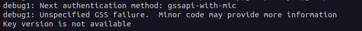

TL;DR:
Durch Ausspionieren der Prozesserstellungen eines mit UCS verbundenen Servers mit umfangreichen Berechtigungen war es möglich, eine große Menge an LDAP-Daten zu sammeln. Diese Daten enthalten verschiedene Anmeldeinformationen und andere Authentifizierungsinformationen. Der Anbieter reagierte äußerst professionell und behob die Probleme außerordentlich schnell. Der Hersteller hat nicht nur die Schwachstellen in dem Skript behoben, in dem wir das Problem gefunden haben, sondern auch seine gesamte Codebasis auf ähnliche Probleme überprüft und diese ebenfalls behoben.
Disclaimer: Dieser Blogpost wurde ursprünglich im DriveByte Blog veröffentlicht. Da die Firma allerdings liquidiert wird, habe ich beschlossen meine alten Blogposts umzuziehen, damit sie nicht verloren gehen.
Inhaltsverzeichnis
Vor einer Weile wurde ich im Rahmen meiner alten Firma beauftragt, einen Penetration Test durchzuführen. Ziel war es, so viele Sicherheitslücken wie möglich zu finden und zu bestimmen, ob ein Angreifer in der Lage wäre, die Infrastruktur des Kunden zu kompromittieren. Das Ungewöhnliche daran? Die IT des Kunden baute weder Microsoft Active Directory noch Entra ID auf, aber auf etwas Ähnlichem. Sie basierte auf einem Produkt namens UCS, das laut ihrer Website eine Lösung für die "einfache und zentrale Verwaltung von Domänen" ist. Das war besonders interessant für mich, da ich diese Lösung zuvor nicht kannte und natürlich immer daran interessiert bin, neue Technologien und Produkte kennenzulernen. Der folgende Blogbeitrag zeigt wie eine Reihe von kleinen Fehlern einen großen Einfluss auf die Sicherheit einer IT-Infrastruktur haben kann.
Seit der initialen Veröffentlichung sind an dem Blogpost einige Veränderungen vorgenommen worden. Unter anderem, da Univention uns weitere Informationen zu manchen Punkten zukommen ließ. Auch hier noch einmal besonderen Dank an Univention für die Informationen und großartige Zusammenarbeit.
Die Schwachstellenanalyse wurde mit Zugang zum Netzwerk des Kunden und einem Benutzer mit sehr begrenzten Berechtigungen (Zur Domäne hinzugefügt, aber nichts weiter) durchgeführt. Bei der Untersuchung des Netzwerks stellte ich fest, dass es möglich ist, über SSH auf mehrere Server zuzugreifen, auch mit dem unprivilegierten Benutzer (das Netzwerk basierte hauptsächlich auf Linux-Systemen, mit nur einer sehr geringen Anzahl von Windows- und Mac-Systemen). Das Problem liegt hier aber nicht bei UCS. Die Berechtigungen wurden vom Anwender fehlerhaft gesetzt und entsprechen nicht dem Default von UCS. Wir kennen diese Art von Miskonfigurationen auch aus dem Windows Active Directory. Dort sind ebenfalls oft Rechte für alle angemeldeten Benutzer für Dienste wie SMB, RDP etc. vergeben.
Natürlich war dies ein sehr interessanter Einstiegspunkt, und ich begann, die Systeme nach interessanten Infos zu durchleuchten. Bevor ich dazu überging, Privilegien zu eskalieren, suchte ich daher zunächst nach geheimen oder generell aufschlussreichen Informationen. Aufgrund einer recht hohen Erfolgsquote beginne ich normalerweise mit der Überwachung von Prozesserstellungen, um nach Möglichkeiten zur Privilegieneskalation und anderen wertvollen Informationen zu suchen (Hell yeah, kompletter HackTheBox/OSCP-Stil!!!). Beim Durchsuchen des Systems entdeckte ich die Dateien /etc/ldap.secret und /etc/machine.secret. Das sah nach relevanten Informationen aus. Leider konnte ich die Dateien nicht lesen, da sie nur für root Les-/Schreibbar waren. Außerdem wusste ich nicht, wofür sie verwendet wurden, ich vermutete jedoch, dass sie Teil der Univention-Software sind. Eine kurze Suche in der umfangreichen Univention-Dokumentation bestätigte diese Annahme.
Nach der Veröffentlichung dieses Blogposts, hat Univention mich noch einmal kontaktiert und mir weitere Informationen zukommen lassen. Die Dateien machine.secret und ldap.secret wurden von Univention selbst schon als mögliches Angriffsziel identifiziert. Daher wird hier bereits über eine Lösung diskutiert. Diese ist wohl auch bereits in Arbeit.
Ich habe mein Glück ein wenig mit einigen Univention-Skripts versucht, aber zunächst nichts gefunden, was vielversprechend aussah. Also war der nächste Schritt, nach einer Privilegieneskalation zu suchen. Daher bin ich zur Überwachung der Prozesserstellung zurückgekehrt, und fand folgendes:
Das Skript check_univention_joinstatus fragte die LDAP-Datenbank als Systemkonto ab und gab das Kennwort im Klartext im Prozessaufruf aus. Ich vermutete, dass dies das Passwort aus der Datei /etc/machine.secret sein könnte, was sich bei der Aufarbeitung auch bestätigte.
Der logische nächste Schritt war also, genau diesen Befehl auf dem Rechner des Angreifers nachzubilden. Ich war ziemlich überrascht zu sehen, dass das Systemkonto grundsätzlich die Berechtigung hatte, DCSync auszuführen. Da es sich hier nicht um ein Windows AD handelt, könnte diese Bezeichnung irreführend wirken. Der Rechner hatte allerdings die Berechtigung, ALLE Verzeichnisobjekte mit all ihren Attributen abzurufen. Dazu gehören auch Benutzer mit ihrem krb5key, sambaNTPassword (NTHash), SHA512 or bcrypt hashes (SHA512 ist bei UCS standardmäßig voreingestellt) sowie ihrer Passwort-Historie. Der folgende Screenshot zeigt die Ausgabe, die ich in einer Laborumgebung nachgestellt habe.

Dies ist jedoch nur möglich, wenn das der Domäne beigetretene System über die mit DCSync vergleichbaren Berechtigungen verfügt. In meiner Testumgebung habe ich einen beliebigen Rechner in die Domäne eingebunden und überprüft, welche Informationen ich vom "Domain Controller" zurückbekomme. Im Vergleich zu den obigen Informationen können Sie im folgenden Screenshot sehen, welche Informationen ein unprivilegiertes, der Domäne beigetretenes System erhält.

Um diese Schwachstelle auszunutzen, können wir uns an n00py's großartigem Blogpost "Alternative ways to Pass the Hash (PtH)" orientieren. Meine Recherche zu diesem Thema hat jedoch gezeigt, dass es nicht so einfach ist, wie ich zunächst vermutet hatte. Meine erste Annahme war, dass ich einfach das LDAP3 Python Modul benutzen kann, um mich mit dem NTLM Hash zu LDAP zu verbinden. Leider scheint das mit Univention nicht möglich zu sein, da es keine NTLM-Authentifizierung für LDAP unterstützt.

Während ich zuerst dachte, dass ich hier einen technischen Fehler mache, zeigt dieser GitHub-Eintrag, dass die Meldung "authMethodNotSupported" vom Server stammt. Es scheint, dass Univention die NTLM-Authentifizierung auf dem Server standardmäßig nicht aktiviert hat (ich weiß nicht, ob sie überhaupt unterstützt wird).
Zum Vergleich: Die 'SIMPLE' Authentifizierung über LDAP funktioniert einwandfrei.

Die Ausgabe von 'server.info' wirft allerdings fragen auf, da sie besagt, dass NTLM ein gültiger SASL-Mechanismus ist. Bevor ich allerdings zu tief in diese Richtung gehe und viel Zeit verliere, habe ich beschlossen, einen anderen Ansatz zu verfolgen. Aber vielleicht motiviert dies hier jemanden, der mehr Wissen in diesem Bereich hat, sich damit zu beschäftigen. Oder vielleicht komme ich später selbst noch einmal darauf zurück.
Auch hier habe ich neue Informationen von Univention erhalten. NTLM ist tatsächlich nicht unterstützt. Das es trotzdem als gültiger SASL-Mechanismus genannt wird liegt wohl an der Standard-Konfiguration von OpenLDAP. Univention addressiert das Thema hier.
Als Alternative schlägt @n00py in seinem Blogpost vor, den NThash zu verwenden, um ein Kerberos-Ticket zu signieren und sich dann über SSH zu verbinden.
Nun, das scheint einfach zu sein. Dazu können wir zum Beispiel den Hash des Administrators und Impacket's ticketer.py Benutzen. Alle Informationen dazu, einschließlich der Domain-Sid usw., waren im vollständigen Domain-Dump enthalten.
ticketer.py -nthash 3B0E04870F352EDC0EF120F16431FA42 -domain-sid S-1-5-21-2228799870-4051273110-1256914315 -spn host/ucs-7427.drivebytetest.intranet -domain drivebytetest.intranet Administrator
Leider scheiterte die Authentisierung. Der Server antwortete wie folgt:

Da es sich hier nicht um ein herkömmliches AD handelt, nahm ich an, dass ein anderer Ansatz für die Signatur der Univention Kerberos-Tickets verwendet werden könnte. Was mir von Anfang an auffiel, waren die krb5Key Felder, die wir im zweiten Screenshot sehen.
Und wieder kam mir die hervorragende Univention-Dokumentation zugute. Dadurch lernen wir: "Das Attribut krb5Key speichert das Kerberos-Passwort.".
Sehr schön. Aber wie?
Nachdem ich eine Weile recherchiert hatte, stieß ich auf diesen Beitrag im Univention-Hilfeforum. Er enthält einige sehr interessante Informationen.
Erstens scheint der krb5Key aus einem Keytype, einem Keyblock, in einem Fall sogar aus einem NThash und einem Saltstring zu bestehen. Nun wollte ich natürlich dieses s4search-decode-Skript in die Finger bekommen, das in dieser Anfrage erwähnt wurde. Ich habe es allerdings nicht gefunden. Es war nicht auf dem Domänencontroller und ich habe es auch nicht im Univention Git Repo gefunden (aber vielleicht habe ich es auch nur übersehen? Es gibt tonnenweise Erwähnungen, aber ich habe das eigentliche Skript nicht gefunden. UPDATE: Auch hier hat mir Univention auf die Sprünge geholfen. Hiermit. Also ja. Ich habe es wirklich einfach übersehen).
An diesem Punkt wies uns ein Freund, mit dem wir das Thema diskutierten, auf die folgende Seite https://docs.software-univention.de/ucs-python-api/_modules/univention/s4connector/s4/password.html hin. Diese Datei kann auch im Univention Git gefunden werden.
Er wies mich auf diese Seite aufgrund der folgenden Funktion hin:
def extractNThashfromkrb5key(ucskrb5key):
NThash = None
for k in ucs_krb5key:
(keyblock, salt, kvno) = heimdal.asn1_decode_key(k)
enctype = keyblock.keytype()
enctype_id = enctype.toint()
if enctype_id == 23:
krb5_arcfour_hmac_md5 = keyblock.keyvalue()
NThash = binascii.b2a_hex(krb5_arcfour_hmac_md5)
break
return NThash
Wunderbar. Das schien vielversprechend zu sein, mit nur einem Nachteil: Die Abhängigkeit von heimdal, die wie eine Univention-spezifische Bibliotheksversion aussah. Ich erkannte schnell, dass diese Bibliothek auf dem Univention Hauptserver installiert ist. Aber ich wollte mich bei der Ausführung des Skripts nicht darauf verlassen müssen.
Nach einigem Suchen fand ich ein Download-Portal, das ein Debian-Paket und den Quellcode etc. anbot.
Das Paket erfordert Python unter 3.8 und einige andere Abhängigkeiten, allerdings nichts außergewöhnliches. Also habe ich einen Docker-Container aufgesetzt, um mit dem Testen fortzufahren (das Dockerfile und unser Skript finden sich in meinem GitHub).
Ich extrahierte die Funktion, fügte nur die notwendigen Imports hinzu und führte das Ganze in iPython aus... Leider ohne Erfolg.

Es scheint, dass der krb5Key normalerweise nicht base64-kodiert ist, wenn er an die Funktion übergeben wird. Nachdem ich dies geändert hatte, trat immer noch ein Fehler auf. Ich begann, die Schritte aufzuschlüsseln und kam zu folgendem funktionierenden Skript, das im Grunde die gleichen Schritte wie die eigentliche Funktion ausführt.
#!/usr/bin/python3
# -*- coding: utf-8 -*-
import binascii
import heimdal
import base64
import argparse
krb5_keytype__des_cbc_crc = 1
krb5_keytype__des_cbc_md4 = 2
krb5_keytype__des_cbc_md5 = 3
krb5_keytype__des3_cbc_sha1 = 16
krb5_keytype__aes128_cts_hmac_sha1_96 = 17
krb5_keytype__aes256_cts_hmac_sha1_96 = 18
krb5_keytype__arcfour_hmac_md5 = 23
def extract_NThash_from_krb5key(ucs_krb5key):
NThash = None
keyblock,salt,kvno = heimdal.asn1_decode_key(base64.b64decode(ucs_krb5key))
if keyblock.keytype().toint() == krb5_keytype__arcfour_hmac_md5:
NThash = binascii.hexlify(keyblock.keyvalue()).decode('utf-8')
else:
print(f'Keytype is: ', keyblock.keytype().toint())
return NThash
def main():
parser = argparse.ArgumentParser(
prog='ProgramName',
description='Simple tool to extract ntlm hash out of the arcfour_hmac_md5 krb5key used by univention ucs')
parser.add_argument('-d', help="put your base64 encoded krb5key value here", required=True)
args = parser.parse_args()
nt_hash = extract_NThash_from_krb5key(args.d)
print("NThash: ",nt_hash)
if __name__ == '__main__':
main()
Und das hat wunderbar funktioniert. Es erlaubt uns die Extraktion des NThash aus dem krb5Key.
Jetzt könnten wir beispielsweise den krb5Key des krbtgt accounts verwenden um ein ticket als Administrator zu erstellen, der in UCS standardmäßig „Domain Admin“ ist.

Und das war's. Wir können jetzt jeden beliebigen Benutzer impersonieren.
Vielleicht können wir auch die anderen Schlüsselblockwerte verwenden, um die TGTs irgendwie zu signieren. Aber das habe ich bisher noch nicht weiter untersucht.
Da wir im Besitz der NThashes sind, können wir auch recht effizient versuchen, Passworte zu knacken. Ich habe bestätigt, dass das sambaNTPassword das tatsächliche Benutzerpasswort beinhaltet.
Die Verwendung von hashcat, einiger geeigneter Wortlisten sowie einiger guter Regeln könnte hier weitere Möglichkeiten eröffnen.
Mit diesen Methoden konnte ich aufgrund einer grundlegenden Fehlkonfiguration, eines trivialen, aber folgeschweren Fehlers und beispielsweise eines wiederherstellbaren Kennworts, oder dem Wiederherstellen des krb5key Attributs, von "jeder Benutzer in der Domäne" zu "Administrator", dem "Domain Admin" Äquivalent, gelangen.
Die Bearbeitungszeit und Antwortzeiten von Univention waren außergewöhnlich. Es war ein Vergnügen, mit ihnen zu arbeiten, da die Kommunikation schnell, professionell und lösungsorientiert war! Herzlichen Dank für diese großartige Erfahrung und das Bewusstsein für Sicherheit! Die Schwachstelle wurde von Univention mit 7.9 (CVSS:3.1/AV:L/AC:L/PR:H/UI:N/S:C/C:H/I:H/A:N) bewertet.
CVE-2023-38994 wurde von MITRE für dieses Problem reserviert, aber noch nicht veröffentlicht.
Behobene Version: UCS 5.0-4 Fix-Nummer: 1.0.2-4
Berechtigungen für "jeder" oder "Authentisierte Benutzer" sollten nicht vergeben werden.
Halten Sie Ihre Software immer auf dem aktuellsten Stand.
Vergeben Sie starke und nicht erratbare Kennwörter.
Für Entwickler und Administratoren: vermeiden Sie sensible Informationen in Prozessaufrufen (Univention hat diesen Punkt bereits in ihre Sicherheitsrichtlininen für Entwickler aufgenommen. Fantastische Arbeit und Reaktion!).
17.07.2023 - Schwachstelle an Univention gemeldet
17.07.2023 - Schwachstelle von Univention bestätigt und im Bugtracker geöffnet
17.07.2023 - GitHub push zur Behebung der Schwachstelle
19.07.2023 - Fix Veröffentlichung in 1.0.2-4 Release Note
19.07.2023 - Fix Veröffentlichung einer ähnlichen Schwachstelle in einem anderen Skript Release Note